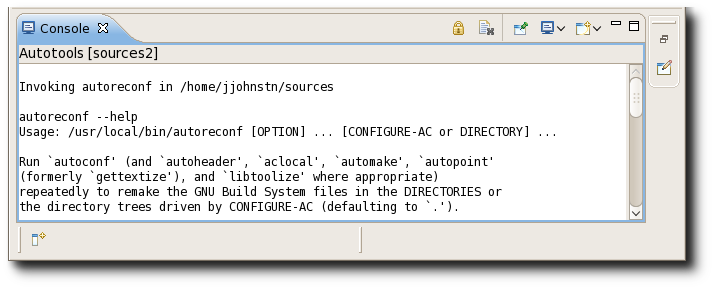

Manual Reconfigure
The newest Autotools now allows the user to manually rerun the configure script. The option is available in the Project menu.

Tool Support
The latest Autotools plugin adds support for the autoheader, autoreconf, and libtoolize tools in addition to the existing tools: aclocal, autoconf, and automake. Instead of displaying the results in a dialog, all Autotool invocation results are now displayed in the new Autotools console. Invoking the tools can be done from the Project->Invoke Autotools menu item and each tool's binary location can be specified in the Project->Properties->Autotools->Tools Settings tab.
